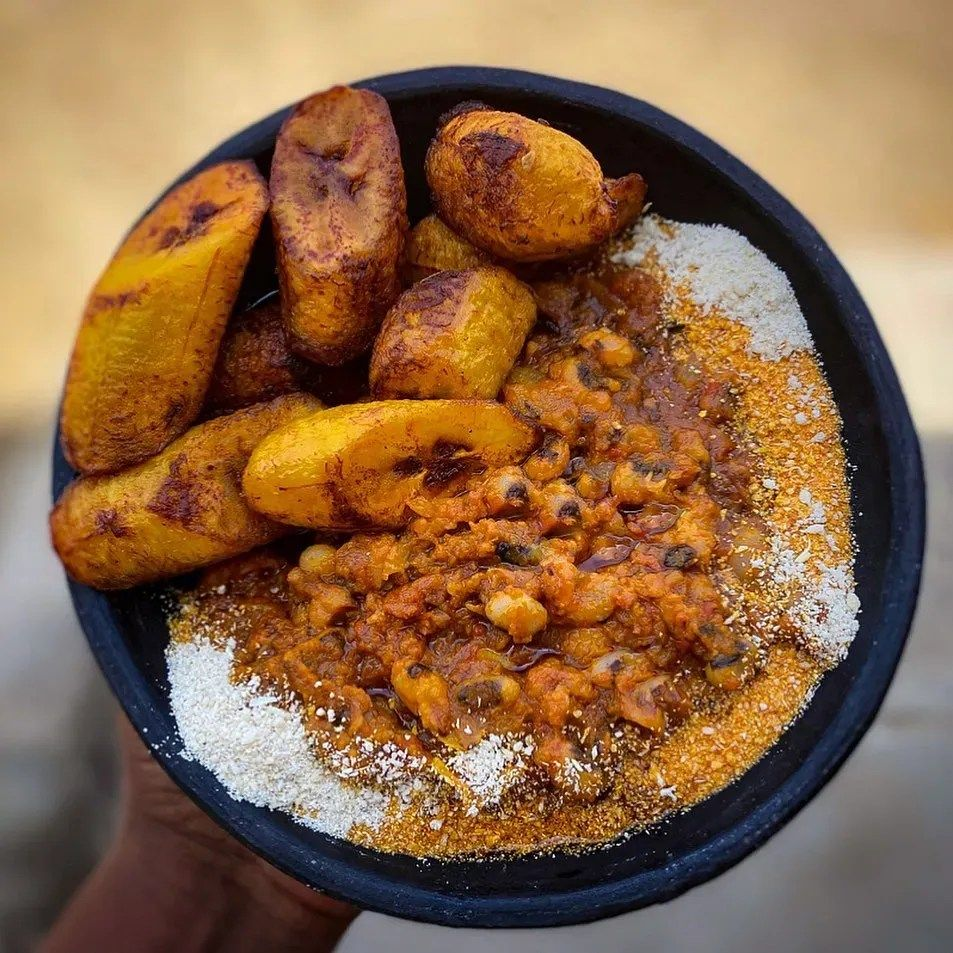

Beans with Plantain

Description
Ingredients
- Beans
- Red Oil
- Riped palantain
- Vegetable Oil
- Gari
- Salt
- Water
- Onions
- Pepper
- Tomatoes
How to cook
- Wash your beans and place it in a saucepan with enough water and some salt to boil on your stove
- Wait for it to cook for 30-40 minutes. Make sure your stir from time to time
- While waiting for your beans, peel of some fingers of plantain and sprinkle a tablespon of table salt onit to taste
- Place your frying pan on fire with a considerate amount of vegetable oil
- Fry your plantain in the oil till it's reddish brown then you know it's ready
- Now place a small saucepan on the fire with some red oil
- Cut some onions into it and fry for a minute or two
- Blend some pepper with some onions and pour it into the red oil
- Add some salt to taste
- Slice some tomatoes into it and leave it to fry for some few minutes to fry
- Now take out you plate, scoop some beans and mix it with your red oil, add some gari and your Plantain
- Enjoy!!!